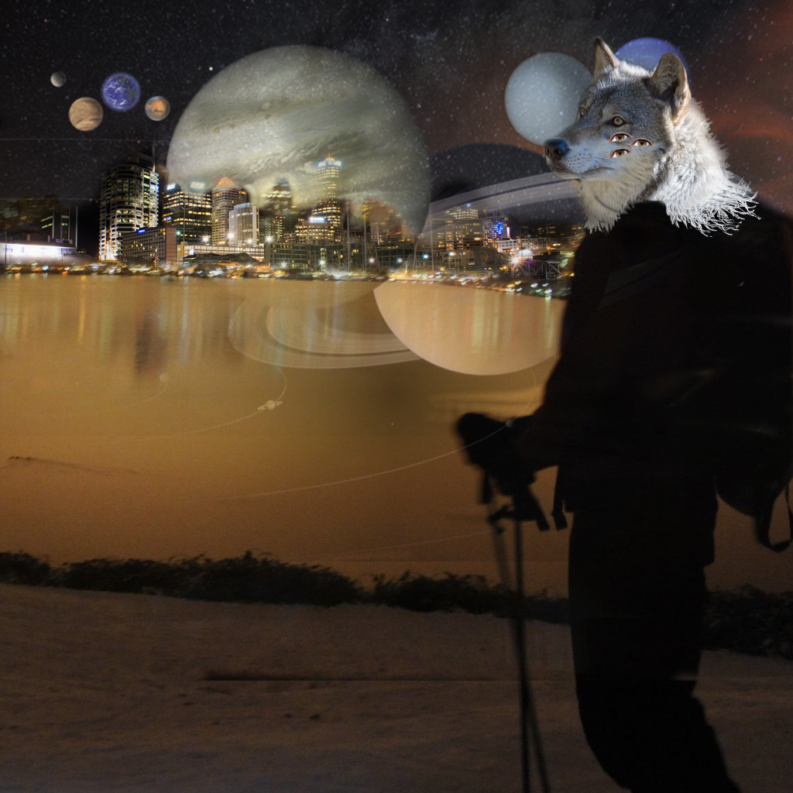

I chose these images because they gave me inspiration and helped me bring my character to life. Each image in their own way represented a part of my character and brought him into life. Overall I have combined six images together. The images were collected from a site called openverse. The most challenging part was figuring out how to make it look like a wolf head is wearing a jacket. The neckline and jacket collar was a tough task. But in the end I figured out how solve it and I’m satisfied
